Cyclistic Project
This capstone project was used for the completion of my Google Data Analytics Certificate. While the scenario is made-up,
the data used in this project is real. In this project, I will be going through the six phases of Data Analytics and explaining my
throughts along the way.
Cyclistic is a bike renting company based out of Chicago. They have two types of members: Casual and Annual. Casual members are riders
who use single-day and full-day passes. Annual members are riders who have subscribed for an annual payment. In search of success, Cyclistic
has observed that Annual members are better for business. Moving forward, they are looking for ways to convert Casual members to Annual
members. The Director of Marketing has tasked me with answering the following question: How do Casual members and Annual members use Cyclistic
bikes differently?
I'll be using the following six deliverables to answer this question:
1. A clear statement of the business task.
2. A description of all data sources used.
3. Documentation of any cleaning or manipulation of data.
4. A summary of my analysis.
5. Supporting visualizations and key findings.
6. My top three recommendations based on my analysis.
Ask
In the Ask phase, it is important to define the problem that we are trying to solve while also considering the stakeholder’s expectations.
The Director of Marketing has asked us to identify how Casual members and Annual members use Cyclistic bikes differently. Also, during this phase,
we would want to consider metrics that will help us answer this question. For this project, the metrics are not overly complicated. We will be
addressing metrics like distance traveled and trip duration.
When creating a statement of the business task, I want it to be specific, measurable, and time bound. Since this is a made-up
scenario, I am not able to discuss this with the Director of Marketing. To make up for this, I will include variables names in place of
specific metrics.
• Statement of the Business Task:
Using the provided data, I will investigate how Casual members and Annual members use Cyclistic
bikes differently. Using this information, I will present my findings and make recommendations on how to convert 'X%' of Casual members to
Annual members over the course of 'Y' months.
Prepare
The Prepare phase is focused on the procurement of the data and making sure that it is stored, organized, and secured appropriately.
For this project, in place of the fictional Cyclisitic data, we will be using public data from Motivate International Inc. spanning from April 2020 to March 2021. It is organized in
the format of twelve .csv files - one for each month. For the purposes of this project, and considering it is public data, there is nothing
to consider as far as storage and security go. However, if this were a confidential project, I would check to make sure that only project members
have access to it, and ensure the data is stored securely(secure server or with some type of secure file lock).
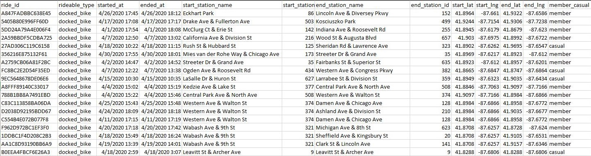
(Screenshot of one of the .csv files provided by Cyclistic.)
• Description of All Data Sources Used:
Twelve .csv files from April 2020 to March 2021 containing information on every ride taken. This
includes information on the ride ID, ride time, starting and ending station, and their membership type. The data will be stored locally on my Computer
under a user profile that only I have access to.
Plan
For the Plan phase, I focused on cleaning, transforming, and preparing the data for analysis.
I worked with the twelve .csv files provided by Cyclistic. Each spreadsheet had between ~40,000 and ~500,000 thousand rows of
data. Since Excel can handle a max of 1,048,576 rows of data, I decided to apply changes to each individual file. I ended up regretting this as
it took far longer than I expected. If I only needed to add columns for additional metrics, it would not have taken very long. However, the
data had a lot of blank cells and ended up needing a lot of work.
• Documentation of Any Cleaning or Manipulation of Data:
The data contained 13 columns of data: ride_id, rideable_type, started_at, ended_at, start_staion_name, start_station_id, end_station_name,
end_station_id, start_lat, start_lng, end_lat, end_lng, and casual_member. Of these columns, only ride_id, rideable_type, and member_casual were
error free.
I started by working on the start_station_name, start_staion_id, end_station_name, end_station_id columns. The main problem for these columns
is that they would be blank. Most of the time, the station's name and ID would be missing. This is likely because the bike never started or ended
at a station during the duration of the ride. A small percentage of those would contain a station name, but not a station ID. In this case, I
would search for the station_name in the other .csv files to see if there was a station_id listed. Typically, these stations were always recorded
without an ID throughout all the data. Without a stakeholder to consult on these kinds of issues, I decided on the following. All blank
start_station_name cells would be filled with “Unknown Start Station”. All blank start_station_id cells would be filled with “1000”
(an unused and abnormal ID). All blank end_station_name cells would be filled with “Unknown End Station”. Lastly, all blank end_station_id
cells would be filled with “1001”. I made these changes because it provided structure throughout the data instead of leaving it blank. In a
real-world scenario, I would be able to consult the stakeholder about these issues and come up with potential changes. Having these placeholder
values makes it easier to search in SQL to apply these changes.
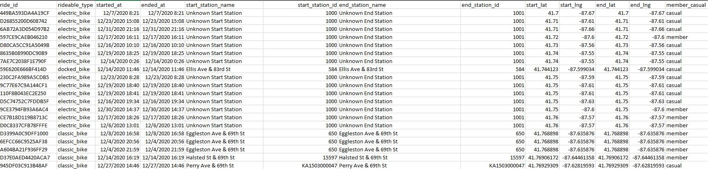
(Screenshot of cleaned station names in Excel.)
Next, I worked on the start_lat, start_lng, end_lat, and end_lng columns. Again, the problem here is they would occasionally be left blank.
My first idea was to filter by the start_station_name of the row missing one of the latitude or longitude values. Once filtered, I would then
fill in the missing longitude and latitude values. However, I quickly learned that bikes that started or ended at the same stations did not have
the same starting/ending longitude and latitude. Because of this, I decided to replace all blanks with a “?”. Ultimately, I decided this was the
best workaround as these columns were not going to be very useful in my analysis.
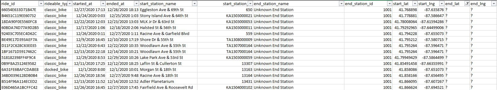
(Screenshot of cleaned longitude and latitude columns.)
Lastly, I looked at the started_at and ended_at columns. For the most part, they were clean. However, throughout all the data, there were
~3200 entries where the ended_at time was earlier then the started_at time. Most of these entries only had a ride time of one minute. This
leads me to believe there might be a problem with something on the back end. Since time travel is probably off the table, I decided to delete
these entries as there were a small percentage of the data and would mess up future calculations.
Now that the data was clean, I created four additional columns that I thought would be useful for future analysis. The first was the
ride_length_hours column. For this metric, I subtracted the ended_at time with the respective started_at time. This resulted in the total
time for the ride in hours. The only problem I ran into was an issue with formatting. Rides that were over 24 hours would display in the format
of HH:MM:SS. In Excel, the HH can exceed 24. In SQL, the HH cannot exceed 24. To, fix this, I changed the format to “General” which displayed
the time in hours as a decimal. This resulted in some ride_length_hours with 400+ hours. I ended keeping these entries as there were a substantial amount of
these long rides. After this, I added another column named ride_length_seconds. This column multiplied ride_length_hours by 86400. While this
column was unnecessary, I added it because it would make calculations easier during the analysis phase.
The last three columns I created were day_of_week, year, and start_month. I created these columns as it would make future
analysis easier when working in SQL, R, and Tableau. For the day_of_week column, I used the =WEEKDAY(CELL) function. This returned “1” for Sunday
and “7” for Saturday. I used the =YEAR(CELL) function to return the year of the ride. Lastly, I used the =MONTH(CELL) function to return
the month of the ride. To ensure my data had no blanks, I used Find and Select > Go to Special > Blanks.
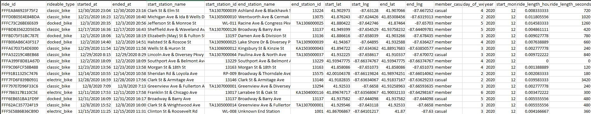
(Screenshot of segment of cleaned spreadsheet.)
Having finished the cleaning, I'd like to reflect on it. I think it would have been better to combine the spreadsheets that had fewer rows of
data. Some months had well over 500,000 rows but others only had ~40,0000. As long as I combined the months with less data and did not exceed
the 1,048,576 row maximum, then the files would have been workable. This would have sped up the cleaning process immensely. Lastly, with this
large amount data, it would have been better to clean it through SQL instead of Excel. The total amount of data far exceeds the maximum for
excel. Therefore, SQL would have been a better tool to use for this phase.
Techniques Used: Pivot Tables, Filters, Sorts, =WEEKDAY(), =YEAR(), =MONTH(), Cell Arithmetic, Column Manipulation
Analyze
Now that the data has been prepared and cleaned, it is time to start analysis. In this phase, it is important to look for relationships, trends,
and insights what will help answer the business question. Since the question asked is asking for a comparison between Casual members and Annual
members, most of the calculations will focus on this difference.
Since this is a large dataset, I decided to start my analysis in SQL. I started by importing the data using the “Import Flat File Wizard” that's
built into Microsoft SQL Server. I found this to be the easiest way to import the data as it allowed me to easily specify the data types for
every column. To ensure the data combined properly, I needed to make sure the row names were the same and the data types were compatible. I
also needed to make sure the data types were correct for the important metrics. If my ride_length_seconds column imported as a varchar(), it
would be difficult to do calculations.
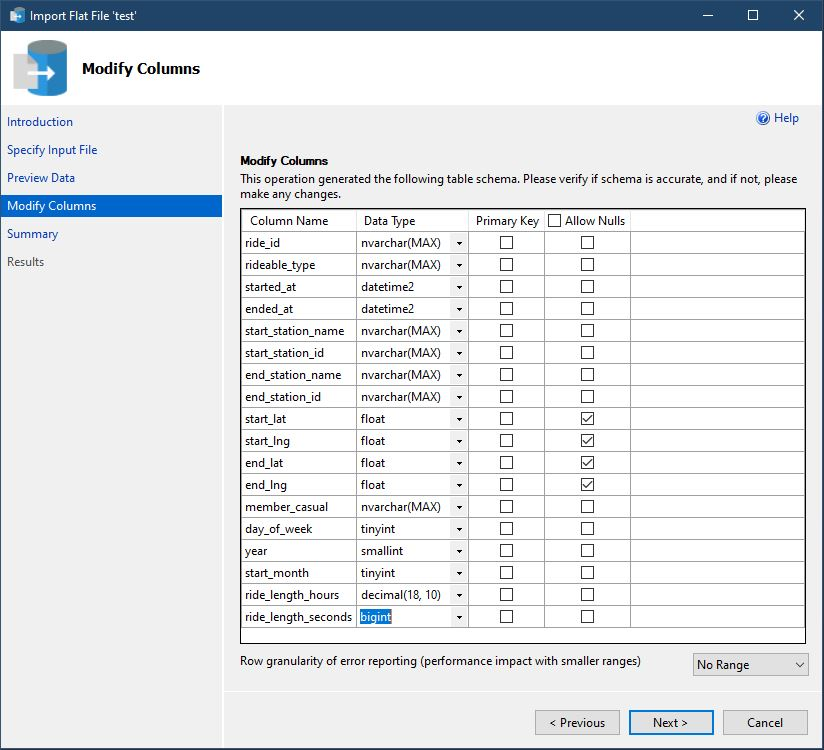
(Screenshot of import wizard importing one of the .csv files.)
Once all the .csv files were imported I used the “UNION” function in SQL to combine the tables into one table called master_table.
Now that my data was centrally located, I began analyzing it. To keep this analysis brief I will only include the more important findings and
elaborate on them. I will include a link to the full SQL script at the end of this section.
• Summary of Analysis:
During the one year period of data gathered, there were about 3,486,415 trips taken. 59% of these trips were taken by Annual members and 41% were taken by
Casual members.
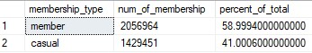
(Table showing the percentage of trips for each membership type.)
Annual member trips were an average of 964 seconds (~15 minutes) and Casual member trips were an average of 2693 seconds (~45 minutes).
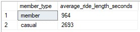
(Table showing the average duration of trips for each membership type.)
I decided to look more closely at the number of trips for each day of the week. I found out that members and Casual members both take the most
trips on Saturday. This table also shows another important trend. Starting with Monday, the closer it gets to the weekend, the number of trips
for Annual members and Causal members increases. While the data does not fit this trend exactly, there does seem to be a clear correlation.
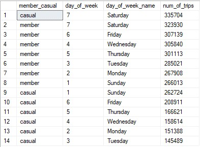
(Table showing popular days of the week for trips based on each membership type.)
To take a closer look, I created separate tables that analyze the trips for Annual members and Casual members. Below is the table for Casual members.
It shows that the number of trips increase the closer it gets to the weekend with the majority of the trips, ~56%, occurring on Friday,
Saturday, and Sunday. We can also see that there is a big difference between the number of trips taken on Saturday and Tuesday. About 23% of trips
occur on Saturday where as only ~10% occur on Tuesday. This is a difference of 13%.
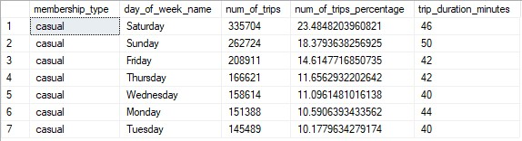
(Table comparing the days of the week and how many trips occur for Casual members.)
Below is the same table for Annual members. It shows a similar trend of the number of trips increasing the closer it gets to the weekend.
The main difference in this table is that Sunday has the least number of trips. Compared to the Casaal member table, the percent difference
between the day with the most trips and least trips is not nearly as significant. The most trips occur on Saturday at ~16% and the least occur on Sunday
with ~13%. The difference in these days is only 3% which is significantly less than the member table.
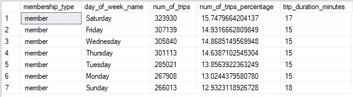
(Table comparing the days of the week and how many trips occur for Annual members.)
After analyzing the data in SQL, I switched over to R Studios. For the sake of analysis, this was not necessary. However, since this is a
portfolio project, I wanted to include R script that represents my current skill level with the language. In R, I imported the data, did
some basic manipulation and cleaning, and then performed a similar analysis to what was done in SQL. Below are 2 visualizations that I created
to compare Casual members and Annual members. I will include a link to the full R script at the end of this section.
Below is the plot for the number of rides per day for each membership type. We can see the same trends as previously discussed. Annual members
have a relatively consistent number of trips everyday where Casual members have most of their rides on Friday, Saturday, and Sunday.
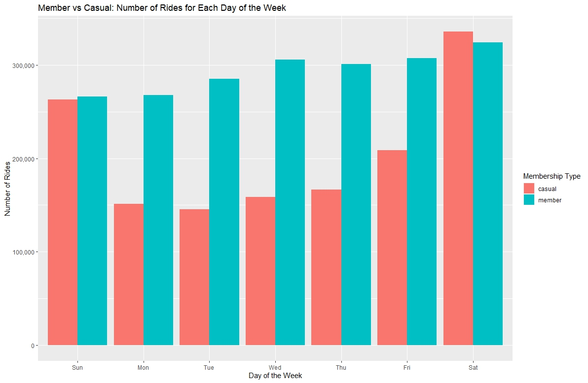
(Plot showing how many trips occur each day of the week for each membership type.)
Below is the plot for the average duration of rides per day for each membership type. With this visualization, it becomes clear that
Casual members take significantly longer rides then Annual members.
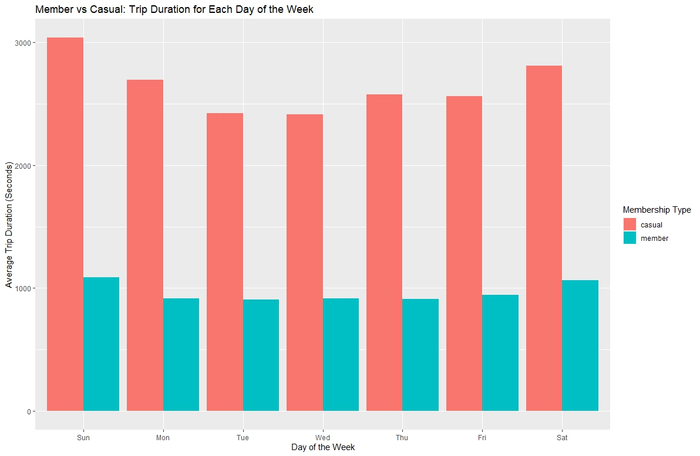
(Plot showing the trip duration for each day of the week for each membership type.)
Techniques Used SQL:Temp Tables, Basic Queries, Sub Queries, Inner Join, Union, Table Creation, Table Insertion, Aggregate Functions
Techniques Used R: Data Importing, Data Exporting, Data Manipulation, Data Summary, Data Visualization
Link to Full SQL Script on Github: Click Here
Link to Full R Script on Github: Click Here
Share
The Share phase focuses on creating supportive data visualizations and presenting the findings to the stakeholder. For the purpose of
this project, I will be including visualizations made in Tableau that would typically be included in the presentation for the stakeholder.
• Supporting visualizations and key findings:
Tableau Dashboard Link for better viewing: Click Here
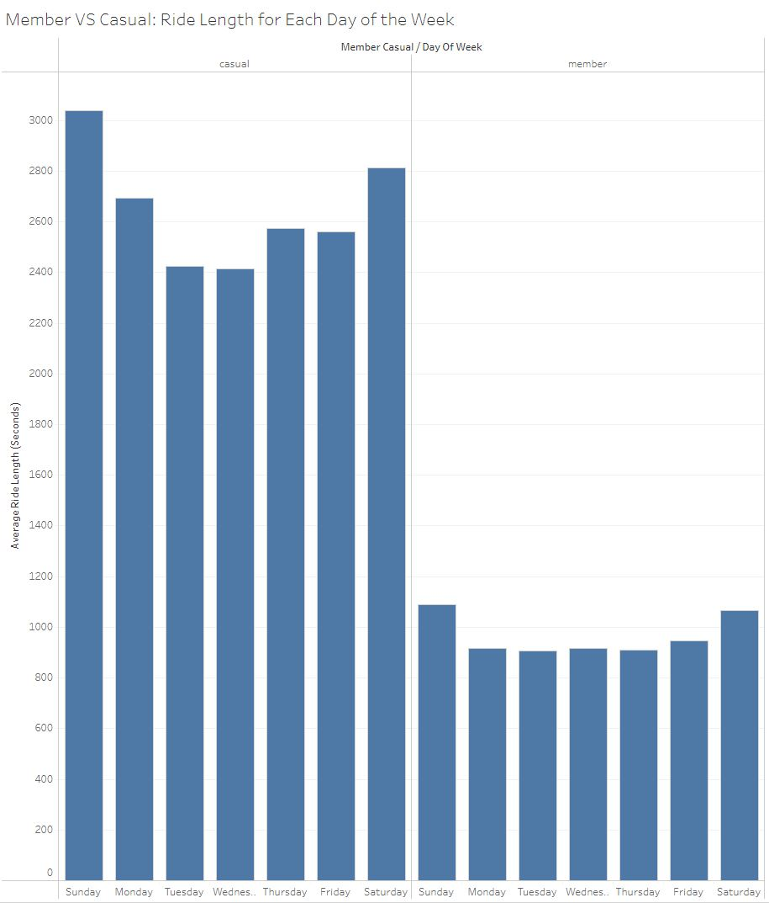
The bar chart above shows the average ride length per day of the week for each membership type. Casual members take considerably longer rides
compared to Annual members.
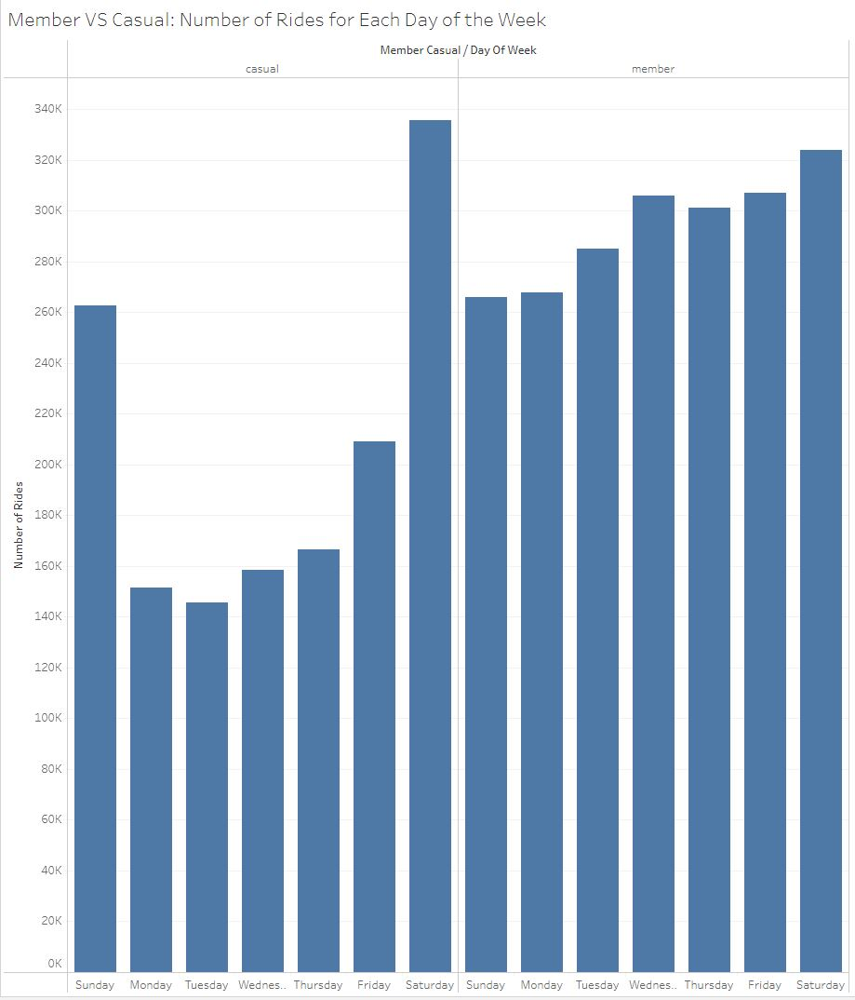
The bar chart above shows the number of rides per day of the week for each membership type. Annual members consistently take rides throughout
the week while Casual members take most of their rides on Friday, Saturday and Sunday.
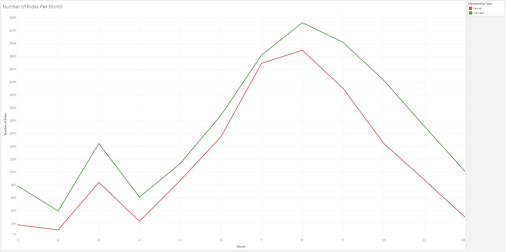
The line chart above shows the number of rides per month for each membership type. In general, both membership types take rides at the same times
throughout the year.
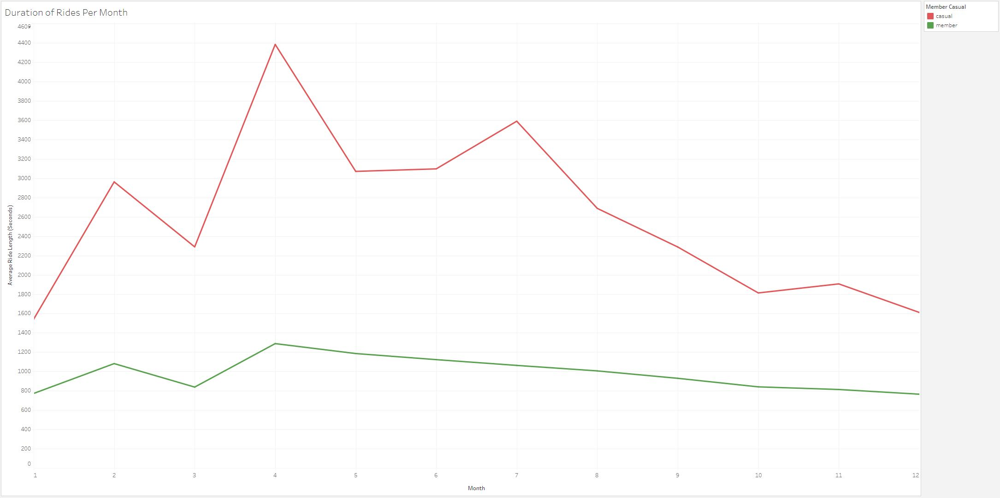
The line chart above shows the duration of rides per month for each membership type. We can see a big difference between the duration of Casual
member rides and Annual member rides.
Act
In the Act phase it is important to summarize your findings and give stakeholders suggestions based off the trends and insights that were
identified. Using this, the stakeholders should have the answer to their business task and be able to make a data driven decision.
Based on the analysis, we know that Casual members take most of their rides on Friday, Saturday, and Sunday. This is likely why they do not
become annual members as they do not ride throughout the week. My first recommendation is to create an incentive to take rides throughout
the week. This could be done in a variety of ways. For example, give Annual members a discount for rides taken on less busy
days like Monday, Tuesday and Wednesday.
We also found out that many rides occur from June to September for both types of memberships. My second recommendation is to find ways
to incentivize rides during the slower months. Casual members are more likely to upgrade their membership if they are getting consistent
use out of it. Incentives can come in the form of special events or charity rides. For example, for each mile ridden in the month of
February, a certain amount of money will be donated to a specific charity.
Lastly, we determined that Casual members take significantly longer rides than Annual members. This is consistent for every month of
the year. My last recommendation is to look further into this data point with a survey. We need to find out why Casual members take longer
rides. Do Casual members ride for sport rather than travel? Maybe they would prefer a selection of sports bikes? How far do Casual members
need to travel for work? By answering these kinds of questions, we can more accurately determine how to create incentives for Casual members
to upgrade their memberships.
• Top three recommendations based on your analysis:
1. Create an incentive for Casual members to take rides on less busy days (Monday, Tuesday, Wednesday).
2. Create an incentive for all members to take rides during the slower months in the form of special events or charity rides.
3. Create and perform a survey on Casual and Annual members to help make data driven decisions and come up with better-focused incentives.
Code
Link to Full SQL Script on Github: Click Here
Link to Full R Script on Github: Click Here